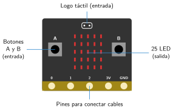
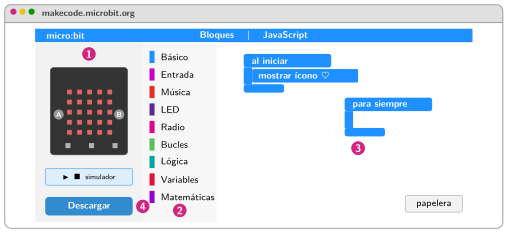

La placa Micro:Bit y el editor MakeCode
🤔 Pienso5 min
Qué hago aquí: Piensa un momento y contesta con lo que ya sabes. No pasa nada si no lo sabes: es para empezar.
Mira una Micro:Bit o el dibujo de la página siguiente. ¿Qué partes crees que sirven para notar cosas? ¿Y para hacer cosas?
✏️ Puedes responder escribiendo, con un dibujo o un esquema, o contándolo en voz alta.
📖 Leo y aprendo15 min
Qué hago aquí: Lee despacio, mira los dibujos y los ejemplos, y quédate con la idea clave del final.
La Micro:Bit es una placa con un pequeño ordenador . Ya trae entradas y salidas. No hay que conectar nada para empezar.

Para programarla usamos MakeCode: makecode.microbit.org. Funciona en el navegador. Tiene tres zonas:
- a la izquierda, el simulador: una Micro:Bit en la pantalla;
- en el centro, los bloques, por colores;
- a la derecha, el espacio de trabajo.

✏️ Hago25 min
Qué hago aquí: Haz las actividades en orden. Empieza siempre por las básicas.
Escribe dos entradas y dos salidas de la Micro:Bit.
¿Cuántas luces LED tiene la Micro:Bit?
Abre MakeCode y crea un proyecto con tu nombre. Escribe el nombre de tres categorías de bloques.
Pon el bloque mostrar ícono dentro de al iniciar. Elige el corazón. ¿Qué pasa en el simulador?
Pulsa el botón JavaScript. Copia tu programa en texto. ¿Qué palabra corresponde a cada bloque?
✏️ Puedes responder escribiendo, con un dibujo o un esquema, o contándolo en voz alta.
🚀 Amplío (si quieres saber más)
Qué hago aquí: ¿Has terminado? Lee la curiosidad o elige el reto. Es voluntario.
Busca en la web de Micro:Bit cuánta memoria tiene la placa. Compárala con la de un móvil.
✅ Compruebo5 min
Qué hago aquí: Contesta sin mirar la ficha y marca cómo lo llevas.